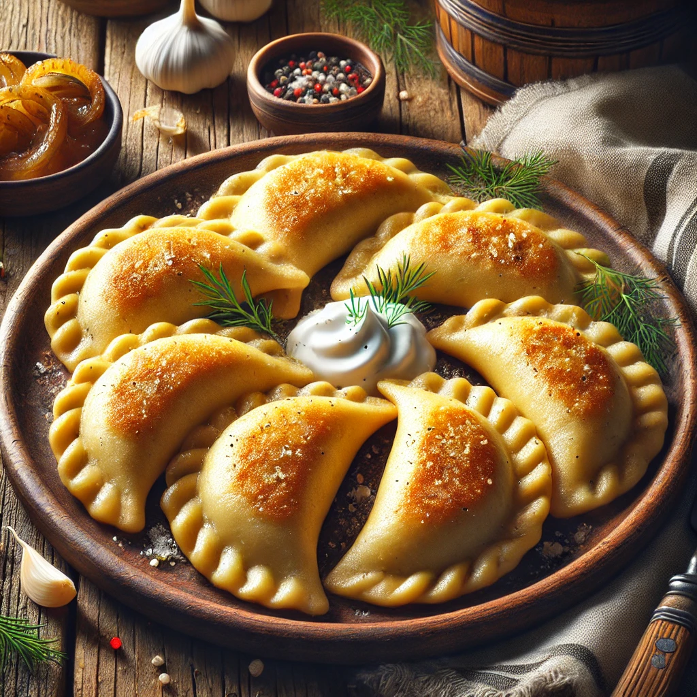

Home
Pierogi

Pierogi Recipe
Pierogi are traditional Polish dumplings, made from unleavened dough and stuffed with various fillings like potato,
cheese, meat, or fruit. They can be boiled, pan-fried, or baked and are often served with sour cream or caramelized onions.
Ingredients
- Flour: 400 g (all-purpose, for the dough)
- Water: 200 ml (warm, for the dough)
- Egg: 1 large (for the dough)
- Potato: 500 g (boiled and mashed, for the filling)
- Farmer's Cheese: 250 g (crumbled, for the filling)
- Onion: 1 medium, finely chopped and sautéed (about 100 g, for the filling)
- Butter: 1 tablespoon (for sautéing the onion)
- Salt and Pepper: To taste (for the filling and dough seasoning)
- Sour Cream: For serving (optional)
- Dill or Chives: Fresh, chopped, for garnish (optional)
- Caramelized Onions: For topping (optional)
Step by Step Recipe
Prepare the Ingredients
- Boil 500 g of potatoes until soft, then mash and let them cool.
- Finely chop 1 medium onion and sauté it in 1 tablespoon of butter until golden brown.
- Crumble 250 g of farmer's cheese.
- Measure 400 g of flour, 200 ml of warm water, and 1 egg for the dough.
- Prepare salt and pepper for seasoning the filling.
Make the Dough
- In a large bowl, mix the flour, egg, a pinch of salt, and warm water until the dough comes together.
- Knead the dough on a floured surface for 5-7 minutes until smooth and elastic.
- Cover the dough with a damp cloth and let it rest for 20-30 minutes.
Prepare the Filling
- In a large bowl, mix the mashed potatoes, crumbled cheese, and sautéed onions.
- Season the filling with salt and pepper to taste.
- Mix well until the filling is smooth and uniform.
Assemble the Pierogi
- Roll out the dough on a floured surface to a thin sheet (about 2 mm thick).
- Use a round cutter (or a glass) to cut circles from the dough.
- Place a small spoonful of filling in the center of each circle.
- Fold the dough over the filling to form a half-moon shape and press the edges firmly to seal.
- Optionally, crimp the edges for a decorative finish.
Cook the Pierogi
- Bring a large pot of salted water to a boil.
- Add the pierogi in batches and cook for 3-5 minutes, or until they float to the surface.
- Remove the pierogi with a slotted spoon and drain well.
Serve
- Serve the pierogi warm with a dollop of sour cream and a sprinkle of fresh dill or chives.
- Optionally, top with caramelized onions or fry the boiled pierogi in butter for a crispy finish.